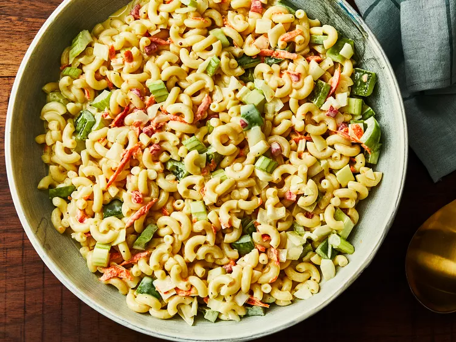
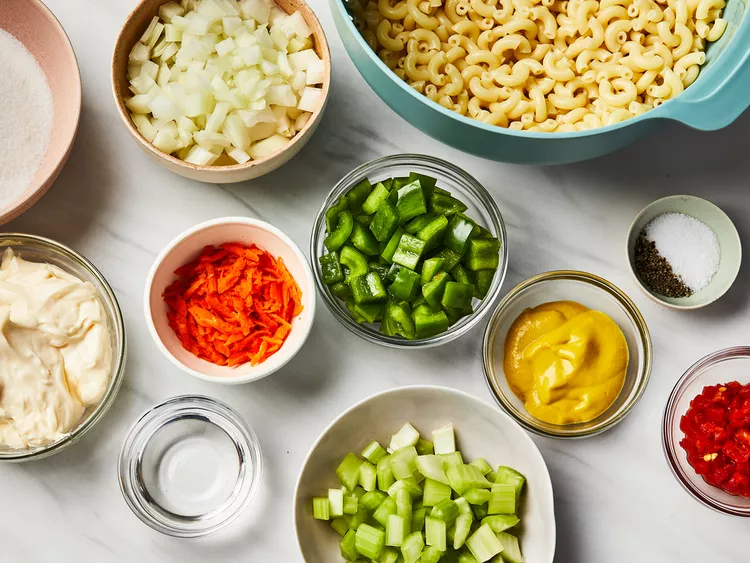
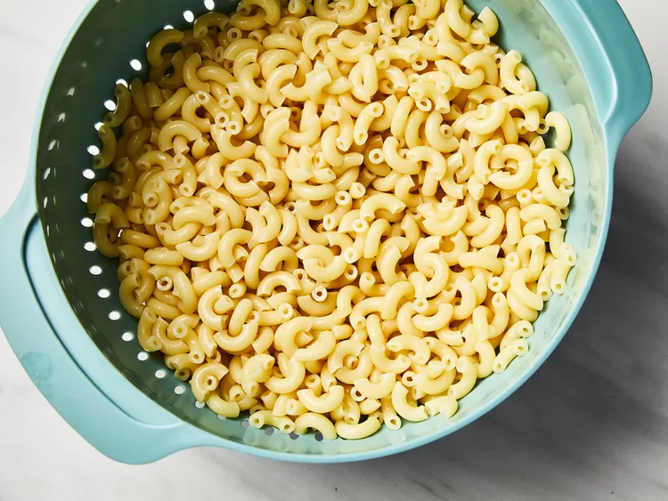
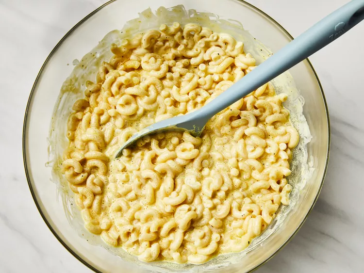
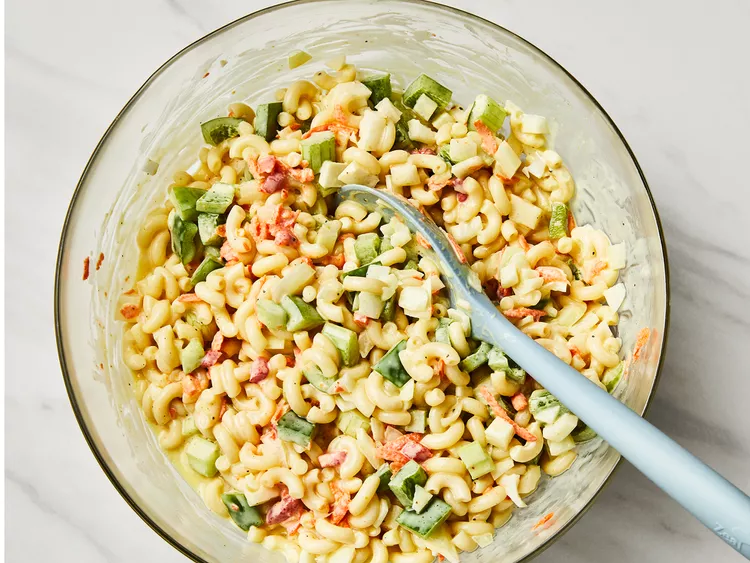

Macroni Salad

Description
This homemade macaroni salad can be stored in an airtight container in the refrigerator for up to five days. We don’t recommend freezing this recipe, as the noodles will likely become mushy after they are thawed.
How do you make macroni salad?
Here’s a brief overview of what you can expect when you make homemade macaroni salad:
- Cook the macaroni in salted water.
- Mix the mayonnaise, sugar, vinegar, mustard, and seasonings together.
- Stir in the macaroni and remaining ingredients. Chill in the refrigerator.
Ingredients
- 4 cups uncooked elbow macaroni
- 1 cup mayonnaise
- 2/3 cup white sugar
- 1/4 cup distilled white vinegar
- 2 and a half tablespoons prepared yellow mustard
- 1 and a half tablespoons salt
- half teaspoon ground black pepper
- 2 stalks celery, chopped
- 1 large onion, chopped
- 1 green bell pepper, seeded and chopped
- 1/4 cup grated carrot (Optional)
- 2 tablespoons chopped pimento peppers (Optional)
Steps
- Gather all ingredients.

- Bring a large pot of lightly salted water to a boil. Cook elbow macaroni in the boiling water, stirring occasionally, until tender yet firm to the bite, about 8 minutes. Rinse under cold water and drain.

- Mix mayonnaise, sugar, vinegar, mustard, salt, pepper, and macaroni together in a large bowl.

- Stir in celery, onion, green pepper, carrot, and pimentos.

- Refrigerate salad for at least 4 hours before serving, but preferably overnight.